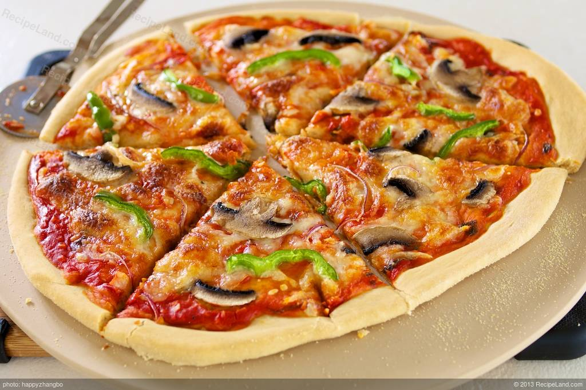

Cheesy Pepper Pizza

Ingredients
- 1 1/2 cup Flour (or a little less)
- 1 package Active dry Yeast
- 1/2 tsp Sugar,1 tsp Cooking oil, 3/4 cup Lo-fat Cottage cheese,draine
- Tbs Cornmeal 1 x Egg
- 2 Tbs Grated Parmesan Cheese, 1 tsp Dried Basil, crushed, 1 x Clove Garlic, minced
Procedure
-
STEP 1
part-skim For crust, mix 3/4 cup of the flour, the yeast, sugar, and 1/4 t salt. Add oil and 1/2 cup warm water (120-130 deg). Beat with electric mixer on low speed 30 seconds, scraping the bowl. Beat on high speed 3 minutes. in as much of the remaining flour as you can.Then, knead in enough remaining flour to make a moderately stiff dough that is smooth and elastic (5 minutes total). Shape into a ball. Place in a greased bowl; turn once. Cover; let rise in a warm place till double (about 30 minutes). Punch down. Cover; let rest 10 minutes. On a floured surface roll dough into a 14" circle. -
STEP 2
Place on a pizza pan sprayed with Pam and sprinkled with the cornmeal. Build up edges slightly. Bake crust in 425 deg F oven about 10 minutes or lightly browned. In a blender combine cottage cheese ,egg, Parmesancheese, basil, garlic, and 1/8 t pepper. Cover; blend till smooth. Spread over hot crust. Cut green pepper into rings. Place atop pizza with mushrooms. Sprinkle with Mozzarella. Bake in 425 deg oven till hot. Per serving: 224 calories, 15 g protein, 26 g carbohydrates, 7 g fat, mg cholesterol, 356 mg sodium, 212 mg potassium